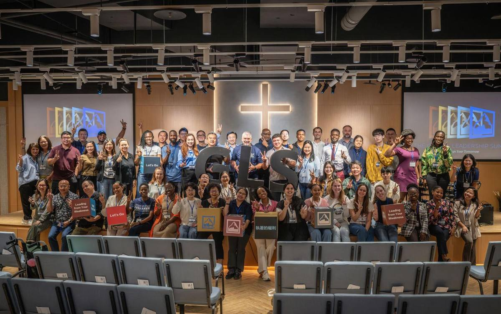

About TIC關於我們
A non-denominational, English-speaking church in Taipei, welcoming people from every nation and background since 1957.
自1957年以來，一間不分宗派、以英語聚會的教會，歡迎來自各國、各種背景的人。
Our vision我們的異象
Disciples who shine the light of God's love on Taipei, Taiwan and the world.成為將神的愛之光照耀台北、台灣與全世界的門徒。
Our mission: we are a multicultural, multigenerational, English-speaking church filled with the power of the Holy Spirit. We proclaim the good news in word and action, and bring glory to God in all we do.
我們的使命：我們是一間多元文化、跨世代、以英語聚會、充滿聖靈能力的教會。我們以言語和行動傳揚福音，凡事榮耀神。
Our values我們的價值
What shapes us塑造我們的價值
Bible based以聖經為本
Scripture shapes what we believe and how we live.
聖經塑造我們的信仰與生活。
Valuing diversity重視多元
Many nations, cultures and ages, united in Christ.
來自不同國家、文化與年齡，在基督裡合一。
Expecting transformation期待生命改變
Come as you are, but don't stay as you came.
帶著原本的你來，但不要一成不變。
Building community建立群體
Life happens in small groups and serving teams.
生命在小組與服事團隊中成長。
Practicing servanthood實踐僕人精神
Following Jesus by serving others.
藉著服事他人跟隨耶穌。
Statement of faith信仰告白
The Apostles' Creed使徒信經
I believe in God, the Father almighty, creator of heaven and earth. I believe in Jesus Christ, his only Son, our Lord, who was conceived by the Holy Spirit, born of the Virgin Mary, suffered under Pontius Pilate, was crucified, died, and was buried; he descended to the dead. On the third day he rose again; he ascended into heaven, he is seated at the right hand of the Father, and he will come to judge the living and the dead. I believe in the Holy Spirit, the holy catholic Church, the communion of saints, the forgiveness of sins, the resurrection of the body, and the life everlasting. Amen.
我信上帝，全能的父，創造天地的主。我信我主耶穌基督，上帝的獨生子；因聖靈感孕，由童貞女馬利亞所生；在本丟彼拉多手下受難，被釘於十字架，受死，埋葬；降在陰間；第三天從死人中復活；升天，坐在全能父上帝的右邊；將來必從那裡降臨，審判活人死人。我信聖靈；我信聖而公之教會；我信聖徒相通；我信罪得赦免；我信身體復活；我信永生。阿們。
What we believe我們的信仰
Jesus is Lord耶穌是主
We confess Jesus Christ as Lord and Savior and seek to glorify God the Father, Son and Holy Spirit.
我們承認耶穌基督是主和救主，並尋求榮耀聖父、聖子、聖靈三一真神。
The Bible is God's unique revelation: inspired, infallible, and the supreme and final authority in all it teaches.
聖經是神獨特的啟示，是受感、無誤的，並在其所教導的一切事上具有至高與最終的權威。
Deut 6:4–9 · 2 Tim 3:15–16 · Heb 4:12 · 1 Thess 2:13 · 1 Pet 2:21
Our story我們的故事
A light in Taipei since 1957自1957年在台北發光
In October 1957, Methodist missionary Pastor Edward Knettler began English services for expats in downtown Taipei.
1957年10月，衛理公會傳教士 Edward Knettler 牧師開始在台北市區為外籍人士舉行英語聚會。
- 1957
First services for expats at Wesley Methodist Church, downtown Taipei.
在台北市區衛理堂開始為外籍人士舉行聚會。
- 1967
Renamed Taipei International Methodist Church.
更名為台北國際衛理教會。
- 1972
Becomes Taipei International Church.
更名為台北國際教會。
- 1989
Moves with Taipei American School to Tianmu.
隨台北美國學校遷至天母。
- 1990s
A Tagalog Fellowship begins for Filipino workers in Taiwan.
為在台菲律賓勞工成立他加祿語團契。
- 2021
The church moves to Dazhi.
教會遷至大直。
- 2023
Pastor Brad Warne begins as senior pastor.
Brad Warne 牧師就任主任牧師。
- Today
A new home in B1 at the TIC Worship Center on Mingshui Road.
在明水路台北國際教會敬拜中心B1的新家。
All our pastors歷任牧師
| Edward Knettler | 1957–60 |
| Franklin Smith | 1960–63 |
| William Ury | 1966–67 |
| Frank Manton | 1967–72 |
| William Ury | 1972–77 |
| Mike VanderPol | 1977–85 |
| Gene VanderWell | 1985–90 |
| Nate Showalter | 1990–98 |
| Paul Ko | 1993–2013 · Tagalog Fellowship |
| Mike Osment | 2000–03 |
| Kim Crutchfield | 2003–10 |
| Michael Payne | 2011–15 |
| Roberto Awa-Ao | 2014–present · Filipino Ministry |
| Mike VanderPol | 2015–16 · interim |
| Peter Palma | 2016–22 |
| Nate Showalter | 2022 · interim |
| Brad Warne | 2023–present |